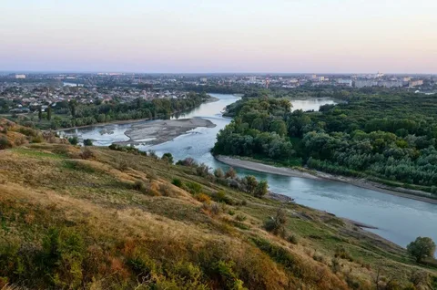
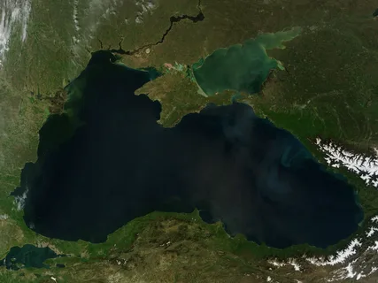
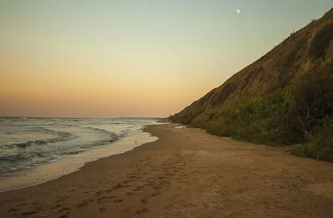
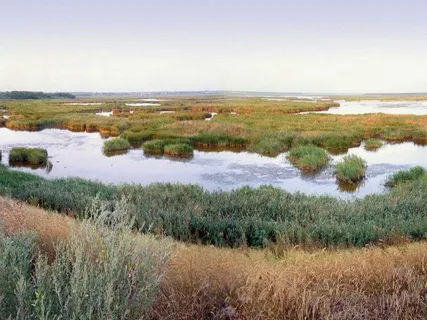
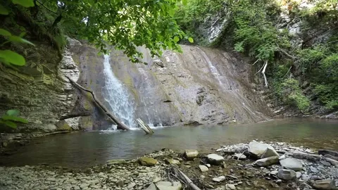

Работу выполнял ученик 10 «Б» класса Дзяульский Ярослав
Вода является одним из важнейших природных ресурсов, необходимых для жизни человека, развития хозяйства и сохранения природных экосистем. Краснодарский край относится к регионам России, обладающим значительными водными ресурсами, однако в последние годы проблема их сохранения становится всё более актуальной.
Актуальность данной практической работы заключается в том, что интенсивное развитие сельского хозяйства, промышленности и туризма оказывает серьёзное влияние на состояние рек, морей и подземных вод региона. Цель работы — изучить водные ресурсы Краснодарского края, выявить основные экологические проблемы и рассмотреть возможные пути их решения.
Краснодарский край расположен на юге Российской Федерации и занимает выгодное географическое положение. Регион граничит с Ростовской областью, Ставропольским краем, Республикой Адыгея, Абхазией и омывается водами Чёрного и Азовского морей.
Климат края преимущественно умеренно-континентальный, на побережье Чёрного моря — субтропический. Такое климатическое разнообразие способствует формированию развитой речной сети и наличию значительных запасов поверхностных и подземных вод.
Водные ресурсы Краснодарского края представлены реками, морями, лиманами, озёрами и подземными водами. Наиболее важную роль играет речная сеть, основу которой составляет река Кубань.
Река Кубань — крупнейшая река края, используемая для водоснабжения, орошения сельскохозяйственных земель и производства электроэнергии. Её притоки — Лаба, Белая, Пшеха — также имеют большое хозяйственное значение.
Чёрное и Азовское моря оказывают влияние на климат региона и являются важными объектами рекреации, рыболовства и морского транспорта.
Лиманы представляют собой уникальные природные экосистемы, богатые биологическими ресурсами. Подземные воды, включая минеральные источники, широко используются в лечебно-оздоровительных целях.
Водные ресурсы Краснодарского края активно используются в различных сферах хозяйственной деятельности. Основными потребителями воды являются:
Особенно большое значение вода имеет для аграрного сектора, так как край является одним из ведущих сельскохозяйственных регионов России.
Несмотря на значительные запасы воды, состояние водных объектов Краснодарского края вызывает серьёзные опасения. Основные экологические проблемы включают:
Эти проблемы приводят к ухудшению качества воды, снижению численности рыбы и негативно отражаются на здоровье населения.
Для улучшения состояния водных ресурсов необходимо принимать комплексные меры:
Важную роль играет формирование экологической культуры и ответственности каждого человека за сохранение водных ресурсов.
В ходе выполнения данной работы были изучены особенности водных ресурсов Краснодарского края и выявлены основные экологические проблемы. Можно сделать вывод, что при рациональном использовании и бережном отношении водные ресурсы региона могут быть сохранены для будущих поколений.
Данная работа подчёркивает важность охраны природы в современном мире.




